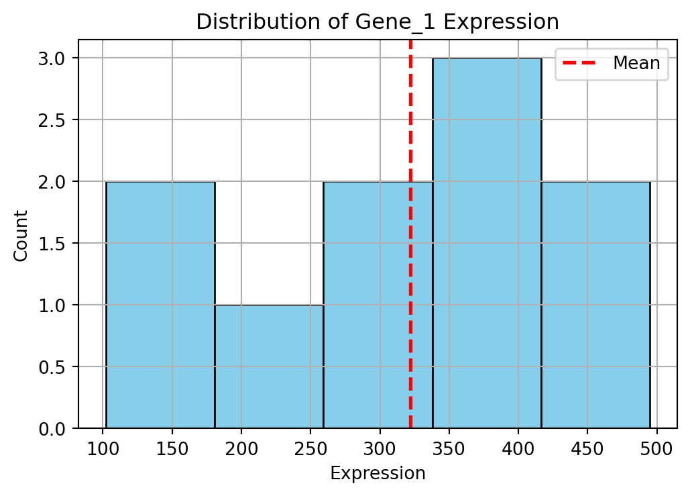
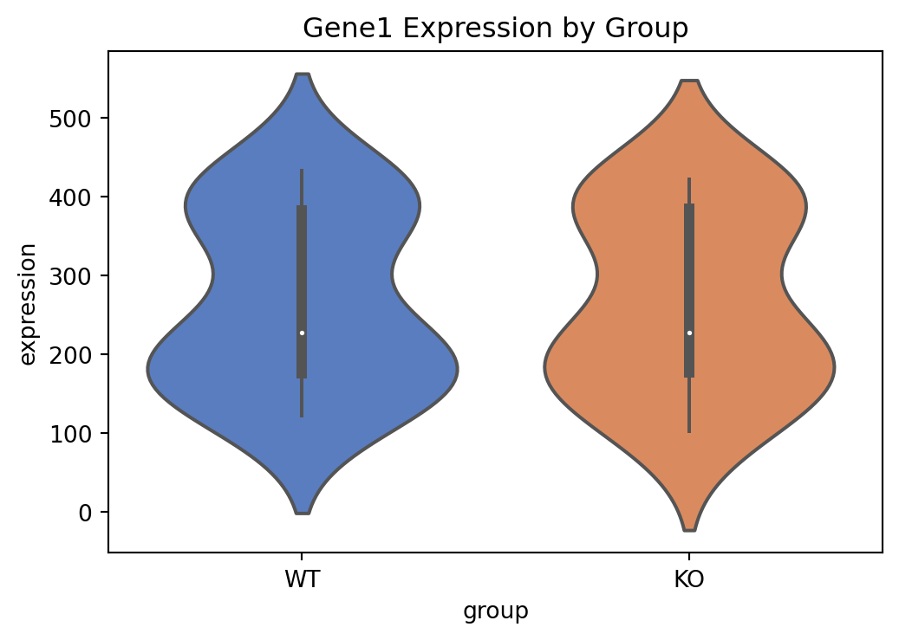
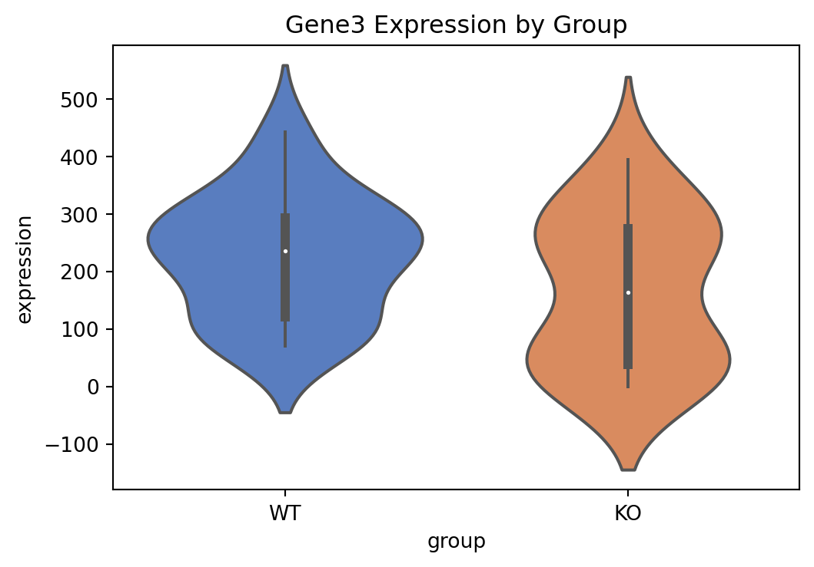
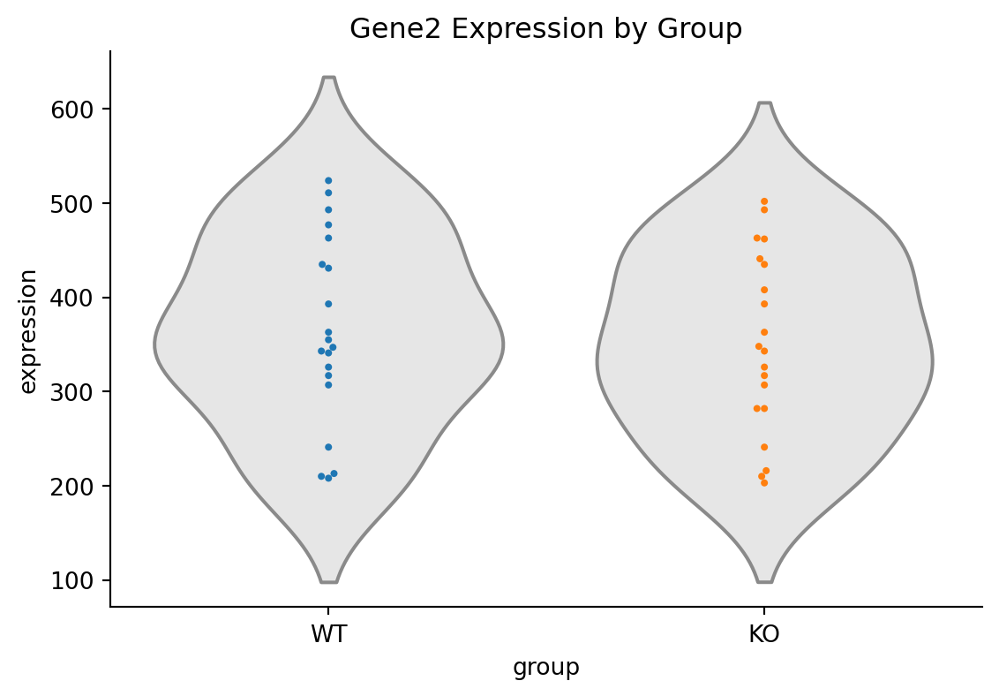
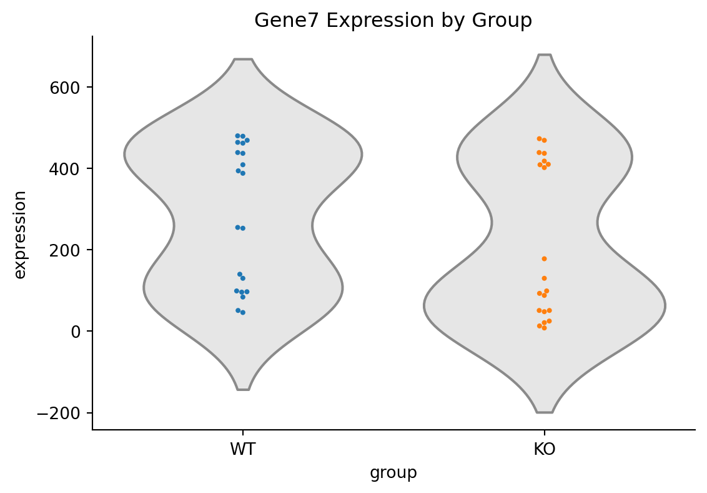

import sys
import numpy as np # allows you to use numpy functions as np.function_name
import pandas as pd
import scanpy as sc
from os import getcwd # importing a specific function from a package, can be used as getcwd() now.
import timeitA Gentle Introduction to Working in Python
TDS-F Group Meeting
In this document, I will provide an introduction to working in Python - from setting up and environment to making packages. I will try to highlight the quirks of Python and the most useful packages!
Setting up your environment
The first step is choosing between environment managers: venv and conda. These will help you work in a contained environment and will allow you to use package managers to download Python packages.
python3 -m venv sc_env # create environment
source sc_env/bin/activate # enter environment
pip install pandas numpy scanpy # installing packagesconda create -n sc_env python=3.10 # create environment
conda activate sc_env # enter environment
conda install pandas numpy scanpy # installing packagesOnce your project is ready to share, you can simply document all the dependencies to run your project using:
pip freeze > requirements.txtconda env export > environment.ymlFor me, I prefer using venv with pip - but many people like conda which was designed for data science and can do a bit more than just being a package installer and can even manage software stacks beyond Python. conda comes packaged with Anaconda or miniconda, which basically provide you with many of the packages required for scientific analyses.
Importing packages
When writing your script there are a few ways to import packages into Python.
You can just import the package directly using import package, all functions will be available as package.function().
You can provide a new name for the package by importing it as import package as pkg, and functions will be available as pkg.function()
You can also directly import a specific function from a package e.g. import function from package, and you can use it as function().
An object-oriented language
Python is object-oriented: everything focuses around objects - everything pretty much is an object.
These objects have their own attributes (i.e. their characteristics) and methods (i.e. things they can do).
For example, for a string a method would be that you can lowercase the whole word e.g. “ACT1” to “act1” by "ACT".lower().
An attribute a string has for example is its length for example “ACT1” has a length of 4 characters.
Two objects that are important for Python programming are functions and classes - which also exist in R. Below, I show how they are typically in formatted.
# Function
def scale_counts(expmat):
'''
These are called docstrings and are placed between three single quotes.
Here, you can put your guide on how to use a function.
It can be called by using help(scale_counts)
This function scales the expression matrix.
Parameters
----------
expmat : np.ndarray
Expression matrix in cell x gene format with count data for expression.
Returns
-------
np.ndarray
Expression matrix standardised based on the matrix sum.
'''
return expmat / expmat.sum(axis=1, keepdims=True)
# Class
class Cell:
def __init__(self, id, expression, location):
'''
Parameters
----------
id : str
Identifier for the cell.
expression : dict
Dictionary of {gene_name: expression_value}.
'''
self.id = id
self.expression = expression
self.location = location
def get_expression(self, gene):
'''Return the expression level of a single gene.'''
return self.expression.get(gene, np.nan) # returns np.nan if gene missing
def plot_expression(self, gene1, gene2):
'''Placeholder for a plotting function comparing two genes.'''
pass # you can implement later
def remove_zero_expression(self, gene):
'''Placeholder for a function that removes genes with zero expression.'''
pass
def get_max_expressin(self, gene):
'''Placeholder for a function that tells you gene(s) with highest expression.'''
pass
# Example usage
cell1_exp = {'gene1': 2, 'gene2': 3, 'gene3': 0, 'gene4': 8}
mycell = Cell('cell1', cell1_exp, 'brain')
print(mycell.get_expression('gene2')) # Should return 3
print(mycell.location) # Should return brain3
brainYou want to use classes when you need reusable, modular code - where you want to apply the same functions. This is what the scanpy authors did when building the AnnData object.
In the above block, I demonstrate the use of docstrings - so that others and most importantly you, can remember what the function/class is.
making your own package
What is nice, is when you have a series of functions/classes you find yourself using a lot, you can easily package it and import it into other projects.
Let’s say I saved the above coding block in a file called “cellutils.py”, I would be able to import it into my other scripts using:
# if python cannot find your package put the following line above:
#sys.path.insert(0, '/path/to/dir/where/your/script/is/')
import cellutils as cu
cu.scale_counts(np.array([[1, 2], [3, 4]]))array([[0.33333333, 0.66666667],
[0.42857143, 0.57142857]])If you want to run your script as a command line tool, that is also possible and you can look into argparse to input arguments e.g.
in the command line you could have something like:
python myscript.py -a file.txt -s 0.45 --method x2
The Python script would look something like:
#!/usr/bin/env python3
import argparse
def main():
parser = argparse.ArgumentParser(description="Process a file with a given method and scale.")
parser.add_argument("-a", "--afile", type=str, required=True, help="Input file (e.g., file.txt)")
parser.add_argument("-s", "--scale", type=float, required=True, help="Scaling factor (e.g., 0.45)")
parser.add_argument("--method", type=str, choices=["x1", "x2", "log"], default="x1", help="Processing method")
args = parser.parse_args()
print(f"File: {args.afile}")
print(f"Scale: {args.scale}")
print(f"Method: {args.method}")
if __name__ == "__main__":
main()loops and comprehensions
In Python the classic for and while loops exist to go through collection objects.
Let’s say we have a Python list with genes that are found expressed in a cell:
expressed_genes = [
"Actb",
"Gapdh",
"Cd3e",
"Pax6",
"Foxp3",
"Tubb3",
"mt-Co1", # mitochondrial
"mt-Nd2", # mitochondrial
"mt-Cytb", # mitochondrial
"Il2ra"
]
# if we want to get and print the first letter of each gene
for gene in expressed_genes: # with this line we are iterating through each item in the list expressed_genes
print(gene[0]) # in the for loop we are printing the first letter of the string.A
G
C
P
F
T
m
m
m
IIn python different types of objects have methods associated with them. In this example we have a list of strings - if we want to see what attributes and methods are available we use dir(var)
dir("Actb")['__add__',
'__class__',
'__contains__',
'__delattr__',
'__dir__',
'__doc__',
'__eq__',
'__format__',
'__ge__',
'__getattribute__',
'__getitem__',
'__getnewargs__',
'__gt__',
'__hash__',
'__init__',
'__init_subclass__',
'__iter__',
'__le__',
'__len__',
'__lt__',
'__mod__',
'__mul__',
'__ne__',
'__new__',
'__reduce__',
'__reduce_ex__',
'__repr__',
'__rmod__',
'__rmul__',
'__setattr__',
'__sizeof__',
'__str__',
'__subclasshook__',
'capitalize',
'casefold',
'center',
'count',
'encode',
'endswith',
'expandtabs',
'find',
'format',
'format_map',
'index',
'isalnum',
'isalpha',
'isascii',
'isdecimal',
'isdigit',
'isidentifier',
'islower',
'isnumeric',
'isprintable',
'isspace',
'istitle',
'isupper',
'join',
'ljust',
'lower',
'lstrip',
'maketrans',
'partition',
'replace',
'rfind',
'rindex',
'rjust',
'rpartition',
'rsplit',
'rstrip',
'split',
'splitlines',
'startswith',
'strip',
'swapcase',
'title',
'translate',
'upper',
'zfill']If we want to see what these methods do, we can use the help function.
help("Actb".startswith)Help on built-in function startswith:
startswith(...) method of builtins.str instance
S.startswith(prefix[, start[, end]]) -> bool
Return True if S starts with the specified prefix, False otherwise.
With optional start, test S beginning at that position.
With optional end, stop comparing S at that position.
prefix can also be a tuple of strings to try.
With this startswith method for strings, lets loop through the list of expressed genes and identify mitochondrial genes (then store them in a list).
mtgenes = [] # initialising empty list
for gene in expressed_genes:
if gene.startswith('mt-'):
mtgenes.append(gene)
print(mtgenes)
# to print a bit nicer
print(", ".join(mtgenes))
# to print even more clearly, we can use f strings
print(f'Mitochondrial genes: {", ".join(mtgenes)}')
print(f'There are {len(mtgenes)} mitochondrial genes in the dataset.')['mt-Co1', 'mt-Nd2', 'mt-Cytb']
mt-Co1, mt-Nd2, mt-Cytb
Mitochondrial genes: mt-Co1, mt-Nd2, mt-Cytb
There are 3 mitochondrial genes in the dataset.list comprehensions
In general if you are iterating through a list, and the result of your loop is a list - you should use a list comprehension! The reason to do this is because they are more efficient and quicker to do the same analysis than a loop.
In this block below, I demonstrate how we can convert the loops shown above into list comprehensions.
firstletter_genes = [gene[0] for gene in expressed_genes] # what you want in final list, your iterator id, what you are iterating through
mtgenes_lc = [gene for gene in expressed_genes if gene.startswith('mt')] # you can also add if statements in
print(", ".join(firstletter_genes))
print(", ".join(mtgenes_lc))A, G, C, P, F, T, m, m, m, I
mt-Co1, mt-Nd2, mt-Cytbis it faster??
Measuring the speed of list comprehensions with timeit:
setup_code = "expressed_genes = ['Actb','Gapdh', 'Cd3e', 'Pax6', 'Foxp3', 'Tubb3', 'mt-Co1', 'mt-Nd2', 'mt-Cytb', 'Il2ra']"
loop_code = """
mtgenes = [] # initialising empty list
for gene in expressed_genes:
if gene.startswith('mt-'):
mtgenes.append(gene)
"""
list_comp_code = "[gene for gene in expressed_genes if gene.startswith('mt')]"
# Timing both
loop_time = timeit.timeit(loop_code, setup=setup_code, number=10000)
list_comp_time = timeit.timeit(list_comp_code, setup=setup_code, number=10000)
print(f"For loop time: {loop_time:.4f} secs")
print(f"List comprehension time: {list_comp_time:.4f} secs")For loop time: 0.0144 secs
List comprehension time: 0.0139 secsThe reason is list comprehensions essentially run the iterations at a faster level using the underhood of Python (C), whereas the loop is having to enter the list each time and append to an unknown sized list.
A simple way to measure the speed of your code:
import time
t0 = time.time()
# place code you want to run here!
t1 = time.time()
total = t1-t0 # this will store the time it takes for you to run that codeGoing beyond lists
Beyond lists, other collection objects exist sets, tuples and dictionaries.
# Lists are denoted by [] -> ordered, changeable, can hold duplicates
genes = ["Actb", "Gapdh", "Cd3e"]
# Tuples are denoted by () -> ordered, unchangeable, can hold duplicates - makes code faster
genes = ("Actb", "Gapdh", "Cd3e")
# Sets are denoted by {} -> unordered, immutable (can add/remove items though), duplicates not allowed
genes = {"Actb", "Gapdh", "Cd3e"}
# to look up the methods available to your data type you can use the dir(genes) or help(genes) function.
# Dictionaries are kind of a named list also denoted by {}, but within the items will have keys.
gene_expression = {
"Actb": 7.2,
"Gapdh": 8.1,
"Cd3e": 3.4
}
# these are good to store items e.g. you could have a list of genes epxressed in key cells
genes_expressed = {
"Cell1": ['gene1', 'gene2'],
"Cell2": ['gene1', 'gene3', 'gene4'],
"Cell3": ['gene2', 'gene3']
}
# you can even have dictionaries of dictionaries!In general, I use lists. I use sets occasionally, for example, to hold a list of genes that I need to filter out of a dataset (I don’t care about order here, don’t want duplicates, and won’t really be changing it).
Dictionaries I use relatively frequently, especially for storing data/metadata - and if you have a dictionary of lists, it is easy to convert it to a pandas dataframe. Another usecase of a dictionary would be if you have a list of mouse genes and their associated human genes, it will allow for easy humanisation of the genes.
Indexing and Slicing
expressed_genes = ['Actb','Gapdh', 'Cd3e', 'Pax6', 'Foxp3', 'Tubb3', 'mt-Co1', 'mt-Nd2', 'mt-Cytb', 'Il2ra']
print("first item of genes list:") #Python is 0-indexed!
expressed_genes[0]
print("items 1 to 3 of genes list:")
expressed_genes[1:3]
print("last item of genes list:")
expressed_genes[-1]
print("every second item in the genes list:")
expressed_genes[::2]
if 'Gapdh' in expressed_genes:
print('Gapdh is expressed')
else:
print('Gapdh is not expressed')
if 'Lyve1' not in expressed_genes:
print('Lyve1 is not expressed')
elif 'Lyve1' in expressed_genes:
print('Lyve1 is expressed')
else:
print('Lyve1 is neither expressed nor not expressed - impossible!')
print('Get length of a variable:')
len(expressed_genes)
# methods available for lists:
expressed_genes.sort()
expressed_genes.append('Lyve1') # genes.insert(0, 'Lyve1') if you want to insert it at the beginning
expressed_genes.remove('Lyve1')first item of genes list:
items 1 to 3 of genes list:
last item of genes list:
every second item in the genes list:
Gapdh is expressed
Lyve1 is not expressed
Get length of a variable:Try Except
Sometimes you want to do an operation, but there is an expected error that might pop up - you might not want your program to exit but to catch that error and do something else - this can be achieved with try except./ For example, if you have genes you always want to remove from a dataset of expressed genes - you might have a fixed list of genes to remove. However, in a future study, those genes may not be expressed and therefore not in the list of expressed genes -> trying to remove it will raise an error -> you can catch the error and do something else like printing a helpful message.
genes2remove = ['Pins', 'Pard3']
for gene in genes2remove:
try:
expressed_genes.remove(gene)
except ValueError:
print(f'{gene} not an expressed_gene, so cannot be removed')Pins not an expressed_gene, so cannot be removed
Pard3 not an expressed_gene, so cannot be removedReading in Tables
Generating the tables:
import os
np.random.seed(42)
# generating a 10x10 table with 10 genes and 10 cells
genes = [f"Gene{i}" for i in range(10)]
cells = [f"Cell{i}" for i in range(10)]
# random count matrix (integers between 50 and 500)
count_matrix = np.random.randint(50, 500, size=(10, 10))
df = pd.DataFrame(count_matrix, index=genes, columns=cells)
df_KO = df.copy() # creating KO version: copying to modify
# reducing expression for Gene3 and Gene7 in Cell0, Cell1, Cell2
for gene in ["Gene3", "Gene7"]:
for cell in ["Cell0", "Cell1", "Cell2"]:
df_KO.loc[gene, cell] = df_KO.loc[gene, cell] // 10 # Strong reduction
output_dir = '/Users/tkafle/Documents/PyBestPractices_SIB/data/' # ensuring output dir exists
os.makedirs(output_dir, exist_ok=True)
# saving the files
df.to_csv(f"{output_dir}/WT_1.csv")
random_changes = np.random.randint(-50, 51, size=df.shape)
modified_df = df + random_changes
modified_df = modified_df.where(df >= 0, 0)
modified_df.to_csv(f"{output_dir}/WT_2.csv")
df_KO.to_csv(f"{output_dir}/KO_1.csv")
random_changes = np.random.randint(-50, 51, size=df_KO.shape)
modified_df = df_KO + random_changes
modified_df = modified_df.where(modified_df >= 0, 0)
modified_df.to_csv(f"{output_dir}/KO_2.csv")The most commonly used package to handle tables in Python is pandas oftened imported as pd.
It is easy to read in a csv into pandas using:
output_dir = '/Users/tkafle/Documents/PyBestPractices_SIB/data/'
wt1_df = pd.read_csv(f"{output_dir}/WT_1.csv", index_col=0) # the table is of type: pd.DataFrameYou can then do classic things you might want to do attirbutes methods:
# Attributes
print("Shape of dataframe:")
print(wt1_df.shape) # (10, 10) — 10 genes x 10 cells
print("Column names of dataframe:")
print(wt1_df.columns) # list of cell names (columns)
# Methods
print("\nTransposing dataframe:")
print(wt1_df.transpose().head()) # flip genes and cells
print("\nAdding a new column:")
wt1_df['GeneSum'] = wt1_df.sum(axis=1) # add a new column: sum of counts per gene
print(wt1_df.head())
wt1_df.drop(['GeneSum'], axis=1, inplace=True) # removing the new column, #inplace lets us do it directly on the df and not create a new variable.
# Change data type (example: ensure all counts are integers)
wt1_df = wt1_df.astype(int)
# remember you can use dir(pd.DataFrame) and help()Shape of dataframe:
(10, 10)
Column names of dataframe:
Index(['Cell0', 'Cell1', 'Cell2', 'Cell3', 'Cell4', 'Cell5', 'Cell6', 'Cell7',
'Cell8', 'Cell9'],
dtype='object')
Transposing dataframe:
Gene0 Gene1 Gene2 Gene3 Gene4 Gene5 Gene6 Gene7 Gene8 Gene9
Cell0 152 264 307 71 495 184 314 480 103 495
Cell1 485 380 393 302 224 70 395 84 155 319
Cell2 398 137 463 285 495 378 102 255 309 400
Cell3 320 422 343 394 100 216 435 130 359 353
Cell4 156 149 435 98 413 323 389 469 240 320
Adding a new column:
Cell0 Cell1 Cell2 Cell3 Cell4 Cell5 Cell6 Cell7 Cell8 Cell9 \
Gene0 152 485 398 320 156 121 238 70 152 171
Gene1 264 380 137 422 149 409 201 180 199 358
Gene2 307 393 463 343 435 241 493 326 210 363
Gene3 71 302 285 394 98 108 219 237 320 239
Gene4 495 224 495 100 413 104 293 369 180 356
GeneSum
Gene0 2263
Gene1 2699
Gene2 3574
Gene3 2273
Gene4 3029 # acessing the expression of a speficific gene in a specific cell
wt1_df.loc['Gene0', 'Cell1'] # row name, column name
# accessing the expression values of a specific cell
wt1_df['Cell1'] # column name
# acessing the expresson of a specific row
wt1_df.loc['Gene0'] # row name
# accessing multiple columns of a specific row
wt1_df.loc['Gene0', wt1_df.columns.str.startswith('Cell')]
# acessing a specific cell
wt1_df.iloc[0, 1] # row index, column index
# acessing a row
wt1_df.iloc[4, :] # row index (usually you would simply do: wt1_df.iloc[4])
# acessing a column
wt1_df.iloc[:, 0] # : means whole row, column indexIn an AnnData object, a lot of the data is stored in pandas dataframes (e.g. var and obs).
Basic numerical/mathematical functions
You can perform basic mathematical functions in Python, not dissimilarly to R. Some advanced functions are in numpy (usually imported as np).
# addition
_ = 5 + 4
# subtraction
_ = 5 - 4
# multiplication
_ = 5 * 4
# division
_ = 5 / 2
# squaring
_ = 5 ** 2
# getting remainder (modulo)
_ = 5 % 2
# Advanced functions in Python are largely found in packages such as numpy [np]
# square root
_ = np.sqrt(16) # or math.sqrt(16)
# natural logarithm (log base e)
_ = np.log(10) # or math.log(10)
# logarithm base 10
_ = np.log10(100)
# exponentiation (e^x)
_ = np.exp(4)
# absolute value
_ = np.abs(-5)
# rounding numbers
_ = np.round(3.567, 2) # rounds to 2 decimal places
# I will note here, when printing long floats, f strings are really useful for formatting them.
num = 3.1415926535
# round to 3 decimal places
print(f"Pi rounded to 3 decimals: {num:.3f}") # f means
# round to 1 decimal place
print(f"Pi rounded to 1 decimal: {num:.1f}")
sml_num = 0.00123456
# 3 significant figures in decimals
print(f"{sml_num:.3g}") #g means general format
big_num = 123456
# 3 significant figures (scientific notication)
print(f"{big_num:.3g}")Pi rounded to 3 decimals: 3.142
Pi rounded to 1 decimal: 3.1
0.00123
1.23e+05Remember when printing floats: - .3f = 3 decimal places. - .3g = 3 significant figures.
Plotting
In general there are three popular libraries: - Matplotlib (basic, customizable) - Seaborn (easy, beautiful defaults) - Plotly (interactive)
The dataset will be some generated data of KO vs WT counts, with 10 genes and 10 cells.
Reading in the dataset:
# load the datasets
wt1 = pd.read_csv(f"{output_dir}/WT_1.csv", index_col=0)
wt2 = pd.read_csv(f"{output_dir}/WT_2.csv", index_col=0)
ko1 = pd.read_csv(f"{output_dir}/KO_1.csv", index_col=0)
ko2 = pd.read_csv(f"{output_dir}/KO_2.csv", index_col=0)
# stack into one DataFrame for easier plotting
# adding group labels
wt1['group'] = 'WT'
wt2['group'] = 'WT'
ko1['group'] = 'KO'
ko2['group'] = 'KO'
wt1['id'] = 'WT1'
wt2['id'] = 'WT2'
ko1['id'] = 'KO1'
ko2['id'] = 'KO2'
# Combine into one DataFrame
df = pd.concat([wt1, wt2, ko1, ko2])
print(df.head()) Cell0 Cell1 Cell2 Cell3 Cell4 Cell5 Cell6 Cell7 Cell8 Cell9 \
Gene0 152 485 398 320 156 121 238 70 152 171
Gene1 264 380 137 422 149 409 201 180 199 358
Gene2 307 393 463 343 435 241 493 326 210 363
Gene3 71 302 285 394 98 108 219 237 320 239
Gene4 495 224 495 100 413 104 293 369 180 356
group id
Gene0 WT WT1
Gene1 WT WT1
Gene2 WT WT1
Gene3 WT WT1
Gene4 WT WT1 matplotlib.pyplot (plt)
Here, I will show how to make a plot and layer using matplotlib.pyplot (plt). The plot will be a histogram showing the expression of genes in Cell2 for sample 1.
import matplotlib.pyplot as plt
cell2_wt1_expression = df[df.id == 'WT1']['Cell2']
plt.figure(figsize=(6,4)) # initating figure size
plt.hist(cell2_wt1_expression, bins=5, color='skyblue', edgecolor='black') # plotting the histogram
plt.title('Distribution of Gene_1 Expression') # title of plot
plt.xlabel('Expression') # x axis label
plt.ylabel('Count') # y axis label
plt.grid(True) # layering on grid
plt.axvline(cell2_wt1_expression.mean(), color='red', linestyle='dashed', linewidth=2, label='Mean') # placing vertical line to show where the mean is
plt.legend() # plot the legend
plt.show() # show the plot
plt.show() is what you need to do to show the plot in a popup window. If you want to save the figure there is plt.savefig().
Other good practices are to close figures once they have been initiated using plt.close() or plt.clf().
seaborn (sns)
seaborn usually runs on long data, so we will need to melt the pandas dataframe from before.
Melting the dataset:
# melting each DF
if 'gene' not in wt1.columns:
wt1.reset_index(inplace=True)
wt1.rename(columns={'index': 'gene'}, inplace=True)
wt1_melted = wt1.melt(id_vars=['group', 'id', 'gene'], var_name='cell', value_name='expression')
if 'gene' not in wt2.columns:
wt2.reset_index(inplace=True)
wt2.rename(columns={'index': 'gene'}, inplace=True)
wt2_melted = wt2.melt(id_vars=['group', 'id', 'gene'], var_name='cell', value_name='expression')
if 'gene' not in ko1.columns:
ko1.reset_index(inplace=True)
ko1.rename(columns={'index': 'gene'}, inplace=True)
ko1_melted = ko1.melt(id_vars=['group', 'id', 'gene'], var_name='cell', value_name='expression')
if 'gene' not in ko2.columns:
ko2.reset_index(inplace=True)
ko2.rename(columns={'index': 'gene'}, inplace=True)
ko2_melted = ko2.melt(id_vars=['group', 'id', 'gene'], var_name='cell', value_name='expression')
# Merge the DataFrames
merged_df = pd.concat([wt1_melted, wt2_melted, ko1_melted, ko2_melted], ignore_index=True)
#merged_df['gene'] = merged_df['gene'].apply(lambda x: 'Gene' + str(int(x)))
print(merged_df.head()) group id gene cell expression
0 WT WT1 Gene0 Cell0 152
1 WT WT1 Gene1 Cell0 264
2 WT WT1 Gene2 Cell0 307
3 WT WT1 Gene3 Cell0 71
4 WT WT1 Gene4 Cell0 495import seaborn as sns
plt.figure(figsize=(6,4))
sns.violinplot(x='group', y='expression', data=merged_df[merged_df.gene == 'Gene1'], palette='muted')
plt.title('Gene1 Expression by Group')
plt.show()
plt.figure(figsize=(6,4))
sns.violinplot(x='group', y='expression', data=merged_df[merged_df.gene == 'Gene3'], palette='muted')
plt.title('Gene3 Expression by Group')
plt.show()

import seaborn as sns
# Gene2
g = sns.catplot(data=merged_df[merged_df.gene == 'Gene2'], x="group", y="expression",
kind="violin", color=".9", inner=None, height=4, aspect=1.5)
sns.swarmplot(data=merged_df[merged_df.gene == 'Gene2'], x="group", y="expression", size=3, ax=g.ax)
g.ax.set_title('Gene2 Expression by Group')
plt.show()
g = sns.catplot(data=merged_df[merged_df.gene == 'Gene7'], x="group", y="expression",
kind="violin", color=".9", inner=None, height=4, aspect=1.5)
sns.swarmplot(data=merged_df[merged_df.gene == 'Gene7'], x="group", y="expression", size=3, ax=g.ax)
g.ax.set_title('Gene7 Expression by Group')
plt.show()

# creating fake log2 fold change and p-value data
volcano_data = pd.DataFrame({
#'gene': ['Gene0', 'Gene1', 'Gene2', 'Gene3', 'Gene4', 'Gene5', 'Gene6', 'Gene7', 'Gene8', 'Gene9'],
'log2FC': np.random.randn(1000), # Random fold changes
'pval': np.random.rand(1000) # Random p-values
})
# calculating -log10(p-value)
volcano_data['-log10(pval)'] = -np.log10(volcano_data['pval'])
plt.figure(figsize=(6,5))
sns.scatterplot(data=volcano_data, x='log2FC', y='-log10(pval)', color='purple')
plt.axhline(y=1.3, color='red', linestyle='dashed') # threshold line for p-value = 0.05
plt.axvline(x=0, color='black', linestyle='dotted')
plt.title('Volcano Plot (Mock Example)')
plt.xlabel('Log2 Fold Change')
plt.ylabel('-Log10(p-value)')
plt.show()
plotly
Interactivity
import plotly.express as px
# Plotly: Strip Plot (interactive)
fig = px.strip(merged_df[merged_df.gene == 'Gene3'], x='group', y='expression', color='cell', stripmode='overlay', title='Gene Expression by Cell (WT vs KO)')
fig.show()types of pltos i want to show, histogram, lineplot, barplot, violin plot, volcano plot, stripplot. when showing matplotlib i want to show how we can layer things. they will be all related to singlecell data and tumours
statistics
R is known for its statistical properties, but the stats module from scipy brings alot of that functionality over.
example glm, example ttest, example chisq test (maybe from the small 100 row table just imported above)
import statsmodels.api as sm
#merged_df['group_binary'] = merged_df['group'].apply(lambda x: 1 if x == 'KO' else 0) # converting KO/WT to binary 0/1.
# for this example, we will just put gene expression as a continuous response
X = pd.get_dummies(merged_df['group'], drop_first=True) # one-hot encoding for group variable
X = sm.add_constant(X) # add intercept
y = merged_df['expression']
# Fit GLM
model = sm.GLM(y, X, family=sm.families.Gaussian()).fit()
# Show the results
print(model.summary()) Generalized Linear Model Regression Results
==============================================================================
Dep. Variable: expression No. Observations: 400
Model: GLM Df Residuals: 398
Model Family: Gaussian Df Model: 1
Link Function: identity Scale: 17963.
Method: IRLS Log-Likelihood: -2525.8
Date: Tue, 29 Apr 2025 Deviance: 7.1492e+06
Time: 14:40:25 Pearson chi2: 7.15e+06
No. Iterations: 3 Pseudo R-squ. (CS): 0.002870
Covariance Type: nonrobust
==============================================================================
coef std err z P>|z| [0.025 0.975]
------------------------------------------------------------------------------
const 269.2350 9.477 28.409 0.000 250.660 287.810
WT 14.3400 13.403 1.070 0.285 -11.928 40.608
==============================================================================from scipy import stats
# two conditions WT vs KO, different in expression
ko_expr = merged_df[merged_df['group'] == 'KO']['expression']
wt_expr = merged_df[merged_df['group'] == 'WT']['expression']
# performing two-sample t-test
t_stat, p_value = stats.ttest_ind(ko_expr, wt_expr)
print(f"T-statistic: {t_stat}, P-value: {p_value}")T-statistic: -1.069947991397797, P-value: 0.2852911632028579# categorising gene expression into 'high' or 'low' based on median expression
median_expr = merged_df['expression'].median()
merged_df['expr_category'] = merged_df['expression'].apply(lambda x: 'high' if x > median_expr else 'low')
# creating a contingency table for chisq test
contingency = pd.crosstab(merged_df['expr_category'], merged_df['group'])
# performing the Chi-Squared test
chi2, p_val, dof, expected = stats.chi2_contingency(contingency)
print(f"Chi-Squared: {chi2}, P-value: {p_val}")Chi-Squared: 0.4900490049004901, P-value: 0.4839054452991407# performing ANOVA on expression values grouped by the 'group' column
group1 = merged_df[merged_df['group'] == 'WT']['expression']
group2 = merged_df[merged_df['group'] == 'KO']['expression']
f_stat, p_val = stats.f_oneway(group1, group2)
print(f"ANOVA F-statistic: {f_stat}, P-value: {p_val}")ANOVA F-statistic: 1.144788704296184, P-value: 0.28529116320296Running multiple test correction
import pandas as pd
import scipy.stats as stats
from statsmodels.stats.multitest import multipletests
# creating a list to store p-values - we will run multiple test correction
p_values = []
# iterating over each gene (rows of the dataframe) to get expression for KO and WT
for g in merged_df.gene.unique():
# getting expression data for the gene in both KO and WT groups
ko_expr = merged_df[(merged_df.gene == g) & (merged_df.group == 'KO')]['expression'].to_numpy()
wt_expr = merged_df[(merged_df.gene == g) & (merged_df.group == 'WT')]['expression'].to_numpy()
# performing two-sample t-test on each gene expression data
t_stat, p_val = stats.ttest_ind(ko_expr, wt_expr, equal_var=False)
p_values.append(p_val)
# Now we will apply multiple testing correction to the p-values using Benjamini-Hochberg (FDR) method, other emthods such as Bonferroni are available
reject, corrected_pvals, _, _ = multipletests(p_values, alpha=0.05, method='fdr_bh')
# Create a dataframe to view the results
results = pd.DataFrame({
'gene': merged_df.gene.unique(),
'p-value': p_values,
'corrected p-value': corrected_pvals,
'reject null hypothesis': reject
})
print(results) gene p-value corrected p-value reject null hypothesis
0 Gene0 0.935963 0.995188 False
1 Gene1 0.951398 0.995188 False
2 Gene2 0.673559 0.995188 False
3 Gene3 0.106674 0.995188 False
4 Gene4 0.816119 0.995188 False
5 Gene5 0.864392 0.995188 False
6 Gene6 0.995188 0.995188 False
7 Gene7 0.224214 0.995188 False
8 Gene8 0.886540 0.995188 False
9 Gene9 0.667638 0.995188 Falseparallelism
import time
import multiprocessing
def calculate_square(number):
'''
function to calculate square of a number (CPU-bound task)
'''
return number * number
def parallel_square(numbers):
'''
function to run the calculation in parallel using multiple processes
'''
# you need to reate a pool of worker processes
with multiprocessing.Pool(processes=multiprocessing.cpu_count()) as pool:
result = pool.map(calculate_square, numbers)
return result
def single_threaded_square(numbers):
'''
single-threaded version: Calculating squares sequentially
'''
result = []
for number in numbers:
result.append(calculate_square(number))
return result
if __name__ == "__main__":
numbers = [x for x in range(1, 10000001)] # 10 million numbers
# measuring the time for the single-threaded execution
start_time = time.time()
single_result = single_threaded_square(numbers)
single_thread_time = time.time() - start_time
print(f"Single-threaded time: {single_thread_time:.2f} seconds")
# measuring the time for the parallel execution
start_time = time.time()
parallel_result = parallel_square(numbers)
parallel_time = time.time() - start_time
print(f"Parallel execution time: {parallel_time:.2f} seconds")
# comparing results to make sure they are the same
print(f"Do the results match? {'Yes' if single_result == parallel_result else 'No'}")Single-threaded time: 1.18 seconds
Parallel execution time: 2.06 seconds
Do the results match? YesSnakemake
show basic snakemake document with three rules: cellranger [bash], preprocessing [python], plotting [r]
# Snakefile
# Define the rule for Cell Ranger processing
rule cellranger:
input:
r1="data/{sample}_R1.fastq.gz",
r2="data/{sample}_R2.fastq.gz"
output:
"output/cellranger_output/{sample}/filtered_feature_bc_matrix"
shell:
"cellranger count --id={wildcards.sample} "
"--fastqs={input.r1},{input.r2} "
"--transcriptome=/path/to/refdata-cellranger-mm10-3.0.0 "
"--sample={wildcards.sample}"
# Define the rule for Python data processing
rule process_data:
input:
"output/cellranger_output/{sample}/filtered_feature_bc_matrix/matrix.mtx"
output:
"output/analysis_results/{sample}_processed.csv"
script:
"scripts/process_data.py"
# Define the rule for generating plots using R
rule plot_data:
input:
"output/analysis_results/{sample}_processed.csv"
output:
"output/analysis_results/{sample}_plot.png"
script:
"scripts/plot_data.R"
run workflow with snakemake --cores 4
working with anndata
I will talk more about this the next time I present a group meeting
typehinting and testing
def normalize(x: np.ndarray) -> np.ndarray:
return x / x.sum()Other common types: int, float, list, tuple, range, str, set, dict, bool, NoneType, pd.Series, pd.DataFrame, np.ndarray, np.int64, np.float64, sc.AnnData.
Example unit testing
import unittest
import numpy as np
class TestNormaliseFunction(unittest.TestCase):
def test_normalize_single_dimension(self):
"""Test normalization of a 1D array."""
x = np.array([1, 2, 3])
expected = np.array([0.16666667, 0.33333333, 0.5]) # sum = 6, so divide each element by 6
result = normalise(x)
np.testing.assert_array_almost_equal(result, expected, decimal=8)
def test_normalize_multiple_dimension(self):
"""Test normalization of a 2D array."""
x = np.array([[1, 2], [3, 4]])
expected = np.array([[0.1, 0.2], [0.3, 0.4]]) # sum = 10, divide each element by 10
result = normalise(x)
np.testing.assert_array_almost_equal(result, expected, decimal=8)
def test_normalize_edge_case(self):
"""Test normalization of an edge case (empty array)."""
x = np.array([])
with self.assertRaises(ValueError): # expecting a ValueError if sum is 0
normalize(x)
if __name__ == "__main__":
unittest.main()how do I test all my code interactively?
iPython
iPython allows you to interactively code, so you can test your code in your terminal.
🧵 R & Python
you can do a lot of the vectorisation programming in R using numpy and pandas
Python will have a bit of a learning curve for plots/stats - some R only packages (especially scientific) may not be available.
Use both! (Snakemake helps bridge them)